class: center, middle <img src="https://apriko.com/en/wp-content/uploads/sites/3/2024/12/devops.png" width=50%/> # DevOps, Software Evolution and Software Maintenance Helge Pfeiffer, Associate Professor,<br> [Research Center for Government IT](https://www.itu.dk/forskning/institutter/institut-for-datalogi/forskningscenter-for-offentlig-it),<br> [IT University of Copenhagen, Denmark](https://www.itu.dk)<br> `ropf@itu.dk` --- class: center, middle # Feedback: The state of your projects? --- ### Release Activity <object width="100%" data="http://209.38.211.172/release_activity_weekly.svg"></object> --- ### Weekly Commit Activity <object width="100%" data="http://209.38.211.172/commit_activity_weekly.svg"></object> --- ### Latest processed events? <object width="100%" data="http://64.226.108.122/chart.svg"></object> --- ### Error plot <object width="100%" data="http://64.226.108.122/error_chart.svg"></object> --- ## How do you feel it is going with your projects? --- ## What to do now? * Start writing your [report](../../exam_details.md) ... But how? --- ## Architectural Viewpoints = Perspectives on a system <p>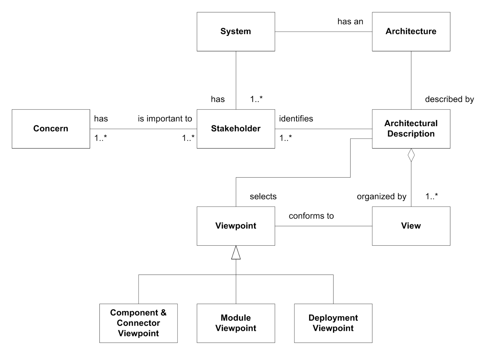</p> Source: Henrik Bærbak Christensen, et al. [_An Approach to Software Architecture Description Using UML_](https://pure.au.dk/ws/portalfiles/portal/15565758/christensen-corry-marius-2007.pdf) --- ## Viewpoints??? - _Static_ view of the system: - **Module viewpoint**: _"concerned with how functionality of the system maps to static development units"_ - **Allocation viewpoint**: _"concerned with how software entities are mapped to environmental entities"_ - _Dynamic_ view of the system: - **Component & Connector viewpoint**: _"concerned with the runtime mapping of functionality to components"_ Adapted from: Henrik Bærbak Christensen, et al. [_An Approach to Software Architecture Description Using UML_](https://pure.au.dk/ws/portalfiles/portal/15565758/christensen-corry-marius-2007.pdf) --- ## Possible Notations - _Static_ view of the system: - **Allocation viewpoint**: UML deployment diagrams - **Module viewpoint**: UML [package](https://www.uml-diagrams.org/package-diagrams-overview.html) and [component](https://www.uml-diagrams.org/component-diagrams.html) diagrams - _Dynamic_ view of the system: - **Component & Connector viewpoint:**: UML (Sub-)system [sequence](https://www.uml-diagrams.org/sequence-diagrams.html) diagrams --- class: center, middle # Examples --- ## Allocation viewpoint: UML Deployment Diagrams <img src="https://www.uml-diagrams.org/deployment-diagrams/deployment-diagram-overview-specification.png" width="100%"> <tiny>Image source: <a href="https://www.uml-diagrams.org/deployment-diagrams-overview.html">https://www.uml-diagrams.org/deployment-diagrams-overview.html</a></tiny> --- ## Allocation viewpoint: UML Deployment Diagrams <img src="https://upload.wikimedia.org/wikipedia/commons/b/b9/Deployment_Diagram.PNG" width="100%"> <tiny>Image source: <a href="https://en.wikipedia.org/wiki/Deployment_diagram">https://en.wikipedia.org/wiki/Deployment_diagram</a></tiny> --- ## Allocation viewpoint: UML Deployment Diagrams <img src="https://agilemodeling.com/wp-content/uploads/2023/05/deploymentDiagramProjectLevel.gif" width="80%"> <tiny>Image source: <a href="https://agilemodeling.com/style/deploymentDiagram.htm">https://agilemodeling.com/style/deploymentDiagram.htm</a></tiny> --- ## Allocation viewpoint: UML Deployment Diagrams <img src="https://www.uml-diagrams.org/examples/deployment-example-clusters.png" width="80%"> <tiny>Image source: <a href="https://www.uml-diagrams.org/web-application-clusters-uml-deployment-diagram-example.html?context=depl-examples">https://www.uml-diagrams.org/web-application-clusters-uml-deployment-diagram-example.html?context=depl-examples</a></tiny> --- ## Component & Connector viewpoint: UML System Sequence Diagrams <img src="https://www.uml-diagrams.org/sequence-diagrams/sequence-diagram-overview.png" width="80%"> <tiny>Image source: <a href="https://www.uml-diagrams.org/sequence-diagrams.html">https://www.uml-diagrams.org/sequence-diagrams.html</a></tiny> --- ## Component & Connector viewpoint: UML System Sequence Diagrams <img src="https://www.uml-diagrams.org/examples/sequence-example-dwr-ajax-comments.png" width="80%"> <tiny>Image source: <a href="https://www.uml-diagrams.org/pluck-comments-uml-sequence-diagram-example.html">https://www.uml-diagrams.org/pluck-comments-uml-sequence-diagram-example.html</a></tiny> --- ## Component & Connector viewpoint: UML System Sequence Diagrams <img src="https://www.uml-diagrams.org/examples/sequence-example-facebook-authentication.png" width="50%"> <tiny>Image source: <a href="https://www.uml-diagrams.org/facebook-authentication-uml-sequence-diagram-example.html">https://www.uml-diagrams.org/facebook-authentication-uml-sequence-diagram-example.html</a></tiny> --- ## Component & Connector viewpoint: UML System Sequence Diagrams <img src="https://www.uml-diagrams.org/examples/spring-hibernate-transaction-sequence-diagram-example.png" width="50%"> <tiny>Image source: <a href="https://www.uml-diagrams.org/examples/spring-hibernate-transaction-sequence-diagram-example.html">https://www.uml-diagrams.org/examples/spring-hibernate-transaction-sequence-diagram-example.html</a></tiny> --- ## Process view: UML Activity Diagrams <img src="https://www.uml-diagrams.org/examples/activity-examples-process-order.png" width="100%"> <tiny>Image source: <a href="https://www.uml-diagrams.org/shopping-process-order-uml-activity-diagram-example.html?context=activity-examples">https://www.uml-diagrams.org/shopping-process-order-uml-activity-diagram-example.html?context=activity-examples</a></tiny> --- ## Process view: UML Activity Diagrams <img src="https://www.uml-diagrams.org/examples/activity-examples-resolve-issue.png" width="70%"> <tiny>Image source: <a href="https://www.uml-diagrams.org/software-resolve-issue-uml-activity-diagram-example.html">https://www.uml-diagrams.org/software-resolve-issue-uml-activity-diagram-example.html</a></tiny> --- ## Process view: Custom Notation <img src="https://storage.googleapis.com/gweb-cloudblog-publish/images/image3_oNR0E64.max-1300x1300.png" width="80%"> <tiny>Image source: <a href="https://strategicfocus.com/2021/10/06/model-training-as-a-ci-cd-system-part-i/">https://strategicfocus.com/2021/10/06/model-training-as-a-ci-cd-system-part-i/</a></tiny> --- ## Process view: Custom Notation <img src="https://miro.medium.com/v2/resize:fit:1100/format:webp/1*KarJfifaVtnaR6PDyiEb-A.jpeg" width="70%"> <tiny>Image source: <a href="https://medium.com/@ojijosh2002/ci-cd-pipeline-design-and-build-for-a-banking-application-on-azure-devops-9f068c57fefc">https://medium.com/@ojijosh2002/ci-cd-pipeline-design-and-build-for-a-banking-application-on-azure-devops-9f068c57fefc</a></tiny> --- ## Custom Notations: You are free to invent your own notations. However, remember to a legend. Make sure that your notation is sensible, correct, and consistent! --- class: center, middle # Formatting Your Report ### Make it as readable as possible --- ## A Report Has a Title and Authors <p>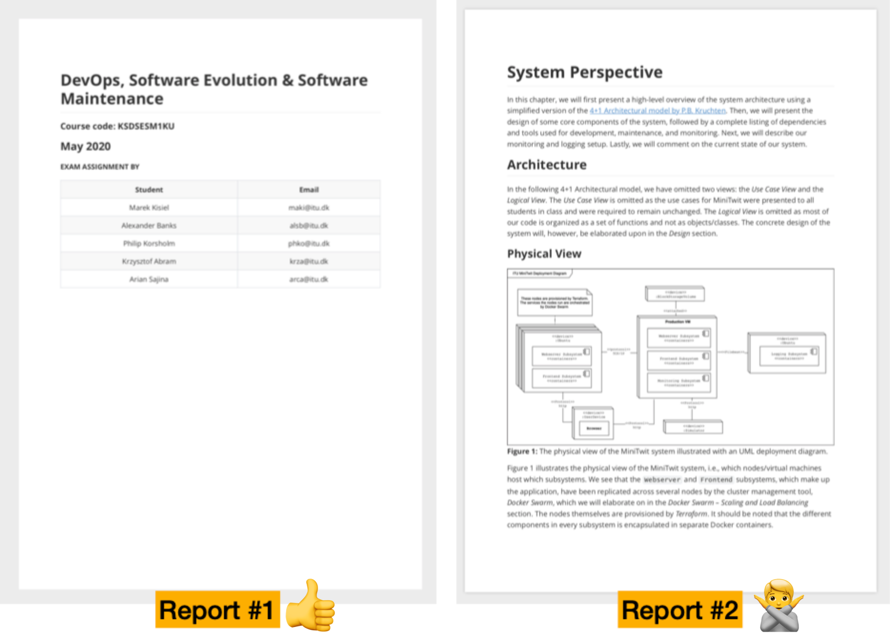</p> --- ## A Report Has a Structure <p>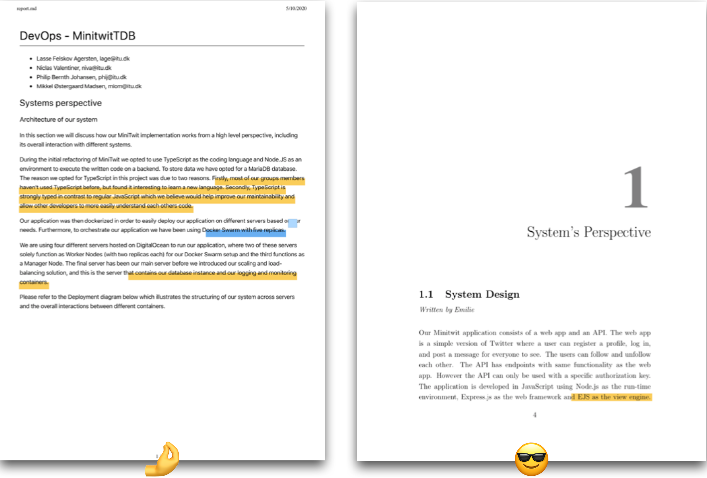</p> --- ### Section Numbers Matter <p>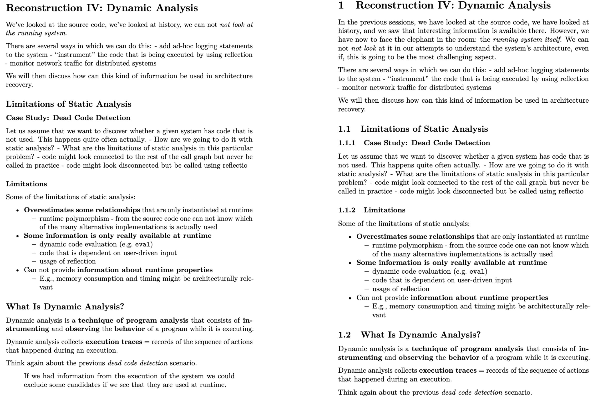</p> Use `--number-sections` with pandoc to convert markdown files, see e.g., https://pandoc.org/MANUAL.html or https://github.com/mircealungu/reconstruction/blob/master/tools/md_to_pdf.sh --- ## Figure and Text font sizes should be similar <p>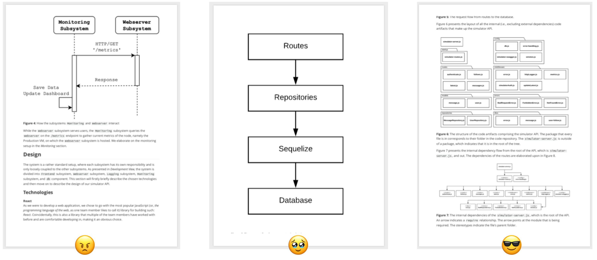</p> https://github.com/mircealungu/student-projects/blob/master/writing_guidelines/Use_the_Right_Font_Size_in_Images.md --- class: center, middle # Exam --- ### Report Last time, I presented the requirements for the report https://github.com/itu-devops/BSc_lecture_notes/blob/master/exam_details.md. Are there any questions, or do you know what to do? <img src="https://www.bing.com/th/id/OGC.066227222701c68b06b161fb5e824094?pid=1.7&rurl=https%3a%2f%2fi.pinimg.com%2foriginals%2f2c%2f27%2fd4%2f2c27d4272d98ba970be312c1ee052185.gif&ehk=ggCh%2fJiAOQ0Lq4nGCQueduhhNg2FHL%2b4eT%2fyc2keudA%3d"> --- class: center, middle # Evaluation --- ### Evaluation Thanks to all of you who provided feedback to the evaluation! To make sure I address the important issues next year, let's have a second iteration on the evaluation. Please navigate to http://209.38.211.172:8888 and indicate to which of your fellow student's feeback you agree. --- ### ITU-wide Evaluation Please participate in the ITU-wide evaluation on LearnIT. Four years ago, the response rate for this course on LearnIT was 0%, which is unpractical since ITUs management mainly looks at these evaluation results: * https://learnit.itu.dk/mod/questionnaire/view.php?id=246539 --- class: center, middle # [Why do all good things come to an end?](https://youtu.be/4pBo-GL9SRg?t=41) --- ### The Simulator stops ~~now~~, next week? ```bash pkill -f minitwit_simulator ``` Or do you want to have it run for two more weeks? --- ### Lean back, relax a bit, and be proud of yourselves <img src="https://media.tenor.com/XzBBjLOUkFwAAAAC/thumbs-up-okay.gif" width="50%"> <img src="https://i.gifer.com/OfL.gif" width="50%"> --- ### Release Activity <object width="100%" data="http://209.38.211.172/release_activity_weekly.svg"></object> --- ### Weekly Commit Activity <object width="100%" data="http://209.38.211.172/commit_activity_weekly.svg"></object> --- ### Daily Commit Activity <object width="100%" data="http://209.38.211.172/commit_activity_daily.svg"></object> --- ### Latest processed events <object width="100%" data="http://64.226.108.122/chart.svg"></object> --- class: center, middle # Work with us?! --- ### Teaching Assistants for this course in 2027 From earlier evaluations: > * Great TA's! They were helpful many times for answering questions. > * [...] TAs are really good at presenting relevant stuff [...]! --- ### Teaching Assistants for this course in 2027 Typical tasks: * Operate the simulator * Talk to and help student groups * Implement improvements in the teaching material and/or the course's technical infrastructure * Interact with teachers to point out recurring issues and problems from student groups --- ### Teaching Assistants for DevOps and Experimentation in Software Engineering in 2027 Likely tasks: * Operate a simulator? * Talk to and help student groups * Implement improvements in the teaching material and/or the course's technical infrastructure * Interact with teachers to point out recurring issues and problems from student groups --- #### Teaching Assistant for BDSA Fall 2027 Is a course with focus on a project, a Twitter-clone in C#/.Net called Chirp. Contact: [Eduard Kamburjan](edka@itu.dk) about it. Tasks: * Help prepare lecture and preparation material * Providing feedback and guidance to student groups * 15ECTS course, i.e., many paid hours of work 😀 --- class: center, middle # Thesis/Project Topics --- ### What I do not want to supervise as projects next year * _"We want to do something with Kubernetes"_ * _"We want to implement a certain DevOps CI pipeline"_ * In essence, theses that are directly related to the topics of this course 😀 - Only exception: work on mining package managers or experimenting with [reproducible builds](https://reproducible-builds.org/), e.g., for [`pkgsrc`](https://pkgsrc.org/) <!-- - Only exception: you are working with a company and you plan to evaluate and measure quality in-/decrease by working in a certain way. --> -- ### What I would like to supervise * Mining (VCS, issue trackers, etc.) studies * Projects on software quality, software quality assessments * Tools implementing software quality metrics * Projects on the following examples * Group projects (3 to 4 students) * Importantly, you are **motivated** * Please contact me **in person** in case you are interested. --- ### Example: Bootstrappable Builds In this lecture, we talked about supply chain attacks, see [security lecture](../session_09/Slides.html). Ken Thompsen explained a specific supply chain attacks in his Turing Lecture [_"Reflections on Trusting Trust"_](https://users.ece.cmu.edu/~ganger/712.fall02/papers/p761-thompson.pdf). Read Russ Cox' [article](https://research.swtch.com/nih), which contains the complete example from the Turing Lecture. <img src="https://research.swtch.com/ddc@2x.png" width="50%"> <!-- More resources on the topic: - https://bootstrappable.org/ - https://lwn.net/Articles/841797/ - https://dwheeler.com/trusting-trust/ - [David A. Wheeler _"Countering Trusting Trust through Diverse Double-Compiling"_](https://web.archive.org/web/20051221041751/http://www.acsa-admin.org/2005/papers/47.pdf) - https://stagex.tools/support/ - https://github.com/fosslinux/live-bootstrap --> Research Questions: - How to modify `pkgsrc` so that the existing [`bootstrap` script](https://github.com/NetBSD/pkgsrc/blob/trunk/bootstrap/bootstrap) bootstraps the compilers too? - How can that be done for other compilers that are distributed as `pkgsrc` packages, e.g., Go, Java? <tiny>Image source: <a href="https://research.swtch.com/nih">https://research.swtch.com/nih</a></tiny> --- ### Example: From Version Control System (VCS) to Binary The cross-platform package manager [`pkgsrc`](https://pkgsrc.org/), defines packages via `Makefiles`. ```Makefile DISTNAME= nano-8.7 CATEGORIES= editors MASTER_SITES= https://www.nano-editor.org/dist/v${PKGVERSION_NOREV:C/\..*$//}/ EXTRACT_SUFX= .tar.xz MAINTAINER= wiedi@frubar.net HOMEPAGE= https://www.nano-editor.org/ COMMENT= Small and friendly text editor (a free replacement for Pico) LICENSE= gnu-gpl-v3 ---snip--- ``` On build, sources are _fetched_ from releases (`MASTER_SITES`). <!-- ```bash $ ~/pkg/bin/bmake -vMASTER_SITES https://www.nano-editor.org/dist/v8/ ``` --> -- Research Questions: - How to modify `pkgsrc` so that sources are received directly from version control system (VCS) instead of release? - How to automatically identify VCS repositories for `pkgsrc` packages? <tiny>Source: <a href="https://github.com/NetBSD/pkgsrc/blob/0efa608749819021a349e06d80a56924ba0c76a4/editors/nano/Makefile">https://github.com/NetBSD/pkgsrc/blob/0efa608749819021a349e06d80a56924ba0c76a4/editors/nano/Makefile</a></tiny> --- ### Example: Effects of a Local LLM in an Introductory Programming Exam <table> <tr> <td> <p>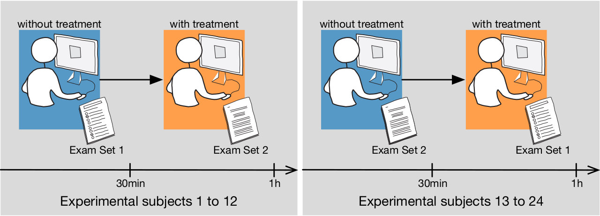</p> </td> <td> <p>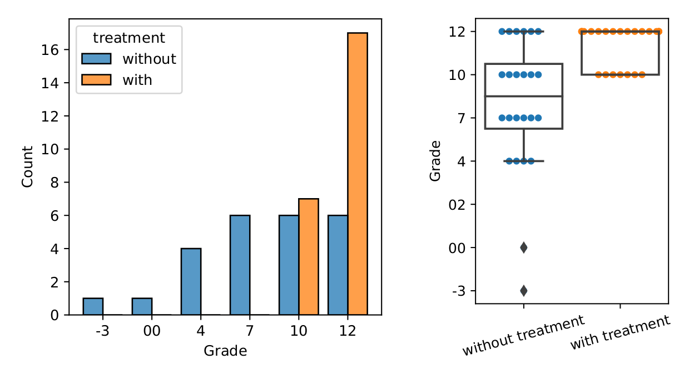</p> </td> </tr> </table> Project: - Improve experiment design - Finalize experiment tooling - Recruit experiment subjects - Conduct a controlled experiment - Analyze and present results --- ### Example: Energy Consumption of Software 2024 (BSc/MSc) E.S. Trindade, G. Meding, S. Harwick _"Energy Consumption in Web Applications: A Comparative Analysis of Languages, Frameworks, and Related Technologies"_ <p>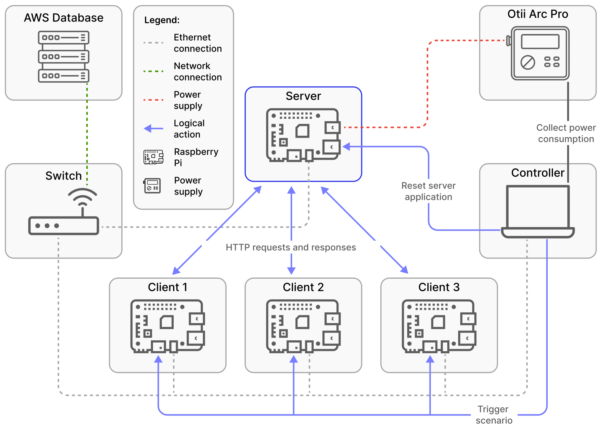</p> <p>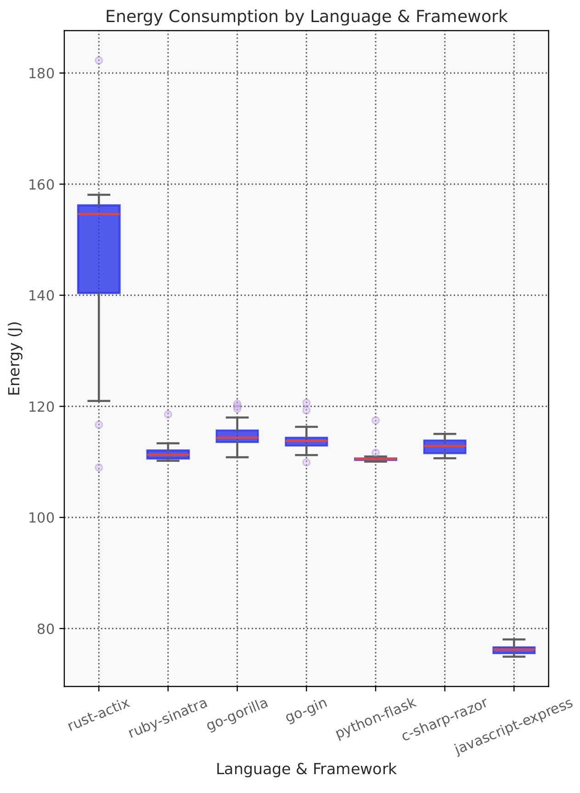</p> Possible projects: - Energy consumption of database - Energy consumption of network calls --- ### Example: RepoPie – Visualization of VCS (BSc/MSc) A. Bagge-Kjær, C. Sønderborg, J. Klompmaker, S. Schalls _"Visualization of VCS histories over time"_ <p>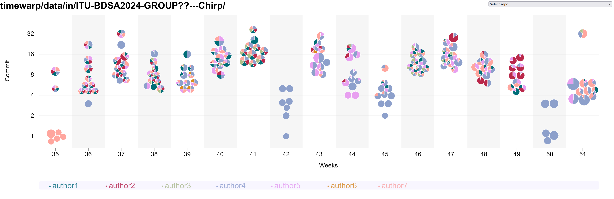</p> Possible projects: - Further development of tool and visualization - Scientific evaluation of usefulness of visualization --- ### Example: [DaSEA](https://github.com/DaSEA-project/DASEA) – A Dataset for Software Ecosystem Analysis (BSc/MSc) P. Buchkova, J.H. Hinnerskov, K. Olsen, H. Pfeiffer [_"DaSEA – A Dataset for Software Ecosystem Analysis"_](https://itu.dk/~ropf/blog/assets/msr2022.pdf) <p>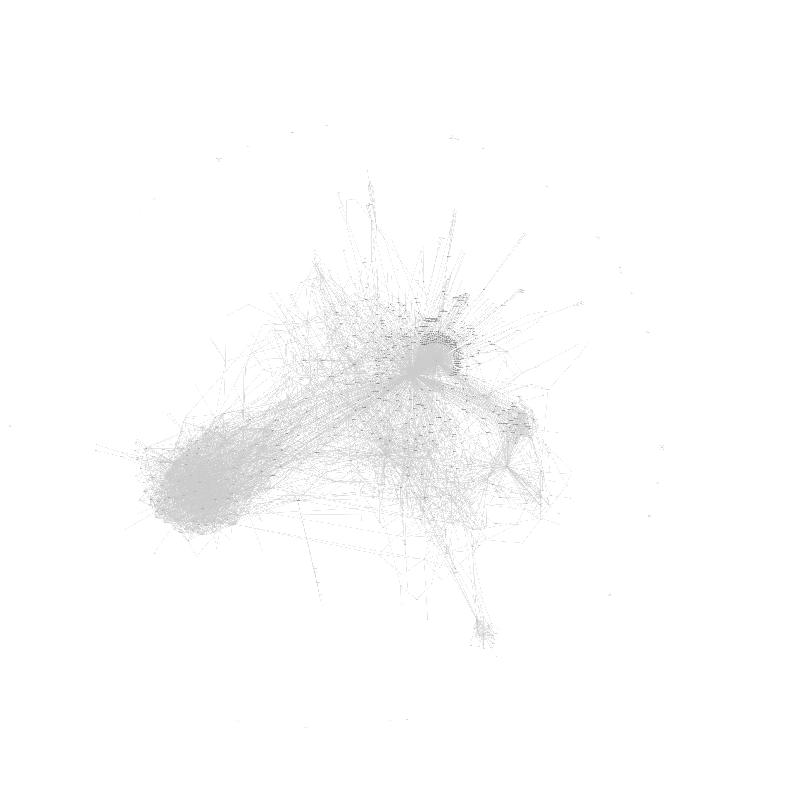</p> Possible projects: - Add more miners, especially for other operating systems (APT, Arch, ...) - Improve long-running miners of large ecosystems like Maven (Maven Central), .Net (NuGet), etc. - Update and operationalize mining - Execute studies with the dataset --- <img src="https://media.tenor.com/images/2f3768616a51fb758890c7bc78145bc3/tenor.gif" width="100%">